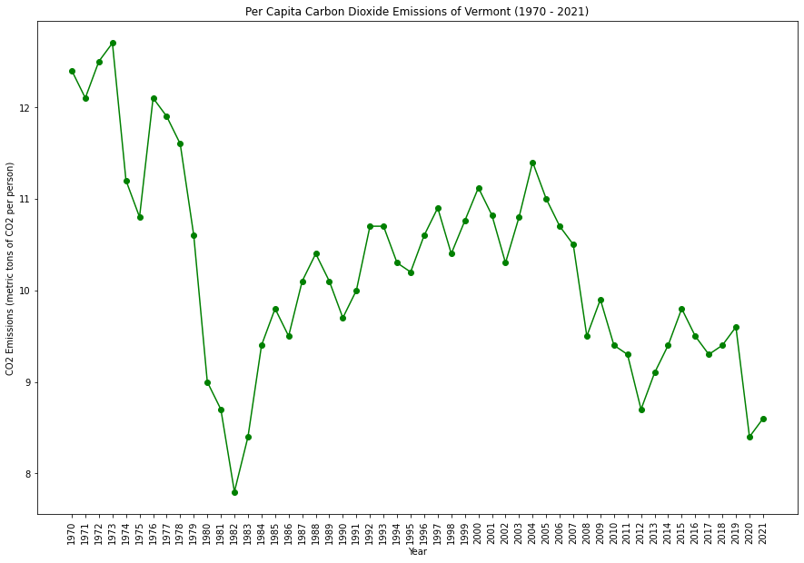

|  | |
|
|
Vermont is a leader in renewable energy, with a strong focus on wind, solar, and hydropower. The state has set ambitious goals for reducing carbon emissions and increasing energy efficiency. Vermont's commitment to environmental sustainability extends to initiatives addressing issues like water quality and land conservation.